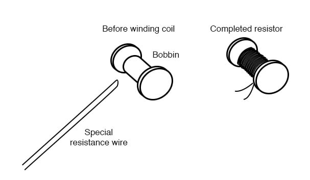
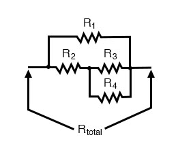
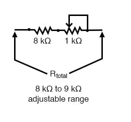
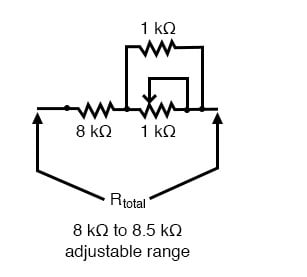

Often in the course of designing and building electrical meter circuits, it is necessary to have precise resistances to obtain the desired range(s). More often than not, the resistance values required cannot be found in any manufactured resistor unit and therefore must be built by you.
One solution to this dilemma is to make your own resistor out of a length of special high-resistance wire. Usually, a small “bobbin” is used as a form for the resulting wire coil, and the coil is wound in such a way as to eliminate any electromagnetic effects: the desired wire length is folded in half, and the looped wire wound around the bobbin so that current through the wire winds clockwise around the bobbin for half the wire’s length, then counter-clockwise for the other half. This is known as a bifilar winding. Any magnetic fields generated by the current are thus canceled, and external magnetic fields cannot induce any voltage in the resistance wire coil:

As you might imagine, this can be a labor-intensive process, especially if more than one resistor must be built! Another, easier solution to the dilemma of a custom resistance is to connect multiple fixed-value resistors together in series-parallel fashion to obtain the desired value of resistance. This solution, although potentially time-intensive in choosing the best resistor values for making the first resistance, can be duplicated much faster for creating multiple custom resistances of the same value:

A disadvantage of either technique, though, is the fact that both result in a fixed resistance value. In a perfect world where meter movements never lose magnetic strength of their permanent magnets, where temperature and time have no effect on component resistances, and where wire connections maintain zero resistance forever, fixed-value resistors work quite well for establishing the ranges of precision instruments. However, in the real world, it is advantageous to have the ability to calibrate, or adjust, the instrument in the future.
It makes sense, then, to use potentiometers (connected as rheostats, usually) as variable resistances for range resistors. The potentiometer may be mounted inside the instrument case so that only a service technician has access to change its value, and the shaft may be locked in place with thread-fastening compound (ordinary nail polish works well for this!) so that it will not move if subjected to vibration.
However, most potentiometers provide too large a resistance span over their mechanically-short movement range to allow for precise adjustment. Suppose you desired a resistance of 8.335 kΩ +/- 1 Ω, and wanted to use a 10 kΩ potentiometer (rheostat) to obtain it. A precision of 1 Ω out of a span of 10 kΩ is 1 part in 10,000, or 1/100 of a percent! Even with a 10-turn potentiometer, it will be very difficult to adjust it to any value this finely. Such a feat would be nearly impossible using a standard 3/4 turn potentiometer. So how can we get the resistance value we need and still have room for adjustment?
The solution to this problem is to use a potentiometer as part of a larger resistance network which will create a limited adjustment range. Observe the following example:

Here, the 1 kΩ potentiometer, connected as a rheostat, provides by itself a 1 kΩ span (a range of 0 Ω to 1 kΩ). Connected in series with an 8 kΩ resistor, this offsets the total resistance by 8,000 Ω, giving an adjustable range of 8 kΩ to 9 kΩ. Now, a precision of +/- 1 Ω represents 1 part in 1000, or 1/10 of a percent of potentiometer shaft motion. This is ten times better, in terms of adjustment sensitivity than what we had using a 10 kΩ potentiometer.
If we desire to make our adjustment capability even more precise—so we can set the resistance at 8.335 kΩ with even greater precision—we may reduce the span of the potentiometer by connecting a fixed-value resistor in parallel with it:

Now, the calibration span of the resistor network is only 500 Ω, from 8 kΩ to 8.5 kΩ. This makes a precision of +/- 1 Ω equal to 1 part in 500, or 0.2 percent. The adjustment is now half as sensitive as it was before the addition of the parallel resistor, facilitating much easier calibration to the target value. The adjustment will not be linear, unfortunately (halfway on the potentiometer’s shaft position will not result in 8.25 kΩ total resistance, but rather 8.333 kΩ). Still, it is an improvement in terms of sensitivity, and it is a practical solution to our problem of building an adjustable resistance for a precision instrument!